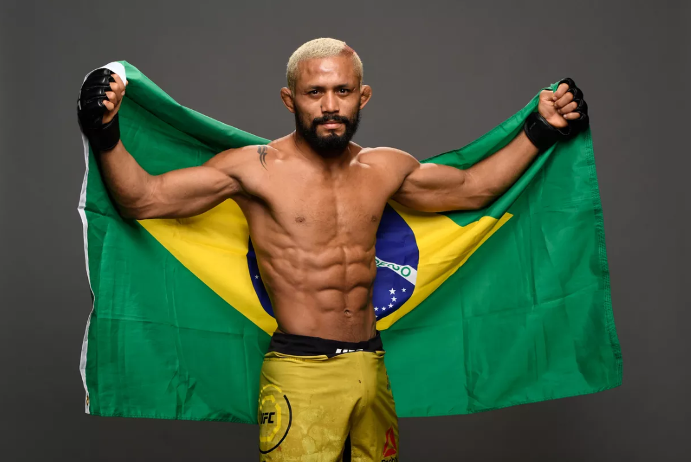

현재 챔피언 - 데이비슨 피게이레두 (브라질, 20승 1패)
현재 랭킹
- 브랜든 모레노
- 아스카 아스카로프
- 알렉산드레 판토자
- 브랜든 로이벌
- 알렉스 페레즈
- 카이 카라-프란스
- 마테우스 니콜라우
- 호제리오 본토린
- 멧 슈넬
- 다비드 드보르자크
역대 챔피언
- 드미트리우스 존슨
- 헨리 세후도
- 데이비슨 피게이레두
- 브랜든 모레노
- 데이비슨 피게이레두
초대 챔피언 - 드미트리우스 존슨 (미국, 27승 3패 현역)

정보
57kg이하 체급으로 2012년 3월 UFC에서 첫 창설된 체급이다. 초대 챔피언 드미트리우스 존슨이 11차 방어에 성공하며 UFC 역대 최다 방어 기록을 작성했다. 그러나 이러한 존슨 천하로 인해 인기도 없고(11번의 방어전 중 넘버링 대회 메인이벤트는 단 3차례 뿐이었다) 돈도 별로 못 받는다.(존슨의 기본급이 겨우 $350,000)그래서 선수들이 밴텀급으로 체급을 올린 경우가 많다.